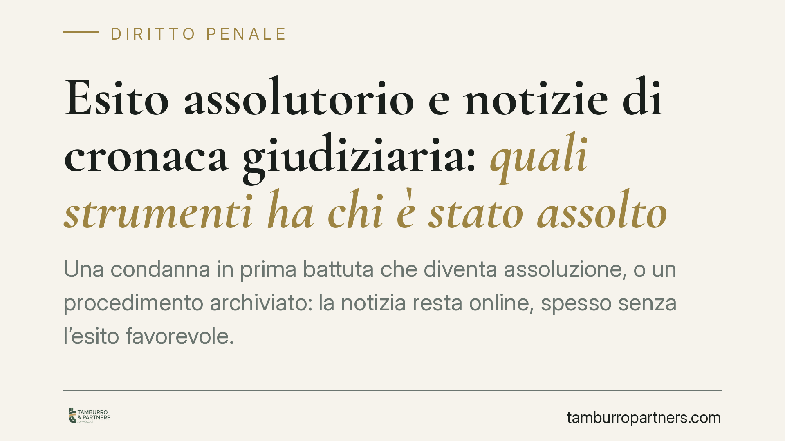

Esito assolutorio e notizie di cronaca giudiziaria: quali strumenti ha chi è stato assolto
Una condanna in prima battuta che diventa assoluzione, o un procedimento archiviato: la notizia resta online, spesso senza l'esito favorevole. Chi è stato assolto dispone di più strumenti per far aggiornare o rimuovere l'informazione, ma vanno distinti con precisione perché seguono binari diversi: rettifica, diritti GDPR, azione civile. Confonderli significa sbagliare richiesta e perdere tempo.

Il problema: la notizia che non si aggiorna
È una situazione ricorrente. Un procedimento penale produce clamore; l'assoluzione, l'archiviazione o il proscioglimento no. Il risultato è che, a distanza di anni, una ricerca online restituisce la notizia dell'indagine o della condanna di primo grado, ma non l'esito definitivo favorevole.
Il danno reputazionale è concreto e duraturo. Chi è stato assolto ha interesse a che l'informazione sia completa e aggiornata. Gli strumenti esistono, ma non sono intercambiabili.
Una precisazione sul dibattito legislativo
Negli ultimi anni il legislatore è intervenuto più volte sul rapporto tra cronaca giudiziaria e presunzione di innocenza. La Legge 9 agosto 2024, n. 114 (nota come "legge Costa") ha inciso sull'art. 114 del codice di procedura penale in materia di divieto di pubblicazione dell'ordinanza di custodia cautelare: è questo, allo stato, il contenuto proprio di quella norma.
L'ipotesi di un obbligo generalizzato di pubblicare l'esito assolutorio, azionabile davanti al Garante in caso di inerzia del direttore responsabile, va trattata con cautela: non trova fondamento certo nella L. 114/2024. Chi scrive invita a verificare sempre il testo in Gazzetta Ufficiale prima di invocare un obbligo di questo tipo. In attesa di un dato normativo puntuale, gli strumenti realmente disponibili a tutela dell'assolto sono quelli di seguito descritti.
I tre binari da non confondere
1. La rettifica (art. 8, L. 8 febbraio 1948, n. 47). È lo strumento della legge sulla stampa. L'interessato può chiedere al direttore responsabile la pubblicazione di dichiarazioni o rettifiche a fronte di contenuti ritenuti non veritieri o lesivi. Il direttore deve provvedere entro i termini di legge (per i quotidiani, entro due giorni dalla ricezione, con gli adattamenti previsti per la stampa non quotidiana e per le testate online registrate). In caso di rifiuto, la via è giudiziaria, davanti all'autorità giudiziaria ordinaria, non al Garante.
2. L'aggiornamento e la deindicizzazione (artt. 16 e 17 del Regolamento UE 2016/679 - GDPR). L'art. 16 riconosce il diritto di rettifica dei dati inesatti; l'art. 17 il diritto alla cancellazione, che nella prassi comprende la richiesta di deindicizzazione dai motori di ricerca o di aggiornamento della notizia con l'esito favorevole. È qui che interviene il Garante per la protezione dei dati personali: in caso di mancato riscontro del titolare del trattamento (editore o gestore del motore di ricerca), l'interessato può presentare reclamo al Garante o ricorrere al giudice.
3. L'azione civile risarcitoria. Resta la tutela aquiliana per il danno da lesione della reputazione, autonoma rispetto alle precedenti e cumulabile.
Aggiornamento e diritto all'oblio non coincidono. L'aggiornamento mira a completare la notizia (aggiungendo l'assoluzione); l'oblio ex art. 17 GDPR mira a rimuovere o rendere non più reperibile un'informazione non più attuale. La scelta dipende dal risultato che si persegue.
Il bilanciamento con la libertà di informazione
Nessuna di queste tutele è assoluta. Operano all'interno del bilanciamento tra il diritto alla protezione dei dati e la libertà di manifestazione del pensiero e di cronaca garantita dall'art. 21 della Costituzione. La giurisprudenza, nazionale e della Corte di Giustizia UE, valuta caso per caso: attualità dell'interesse pubblico, ruolo del soggetto, tempo trascorso, completezza dell'informazione.
In concreto, la richiesta di cancellazione integrale di un articolo di cronaca è spesso respinta; la richiesta di aggiornamento con l'esito assolutorio, o di deindicizzazione del singolo contenuto obsoleto, ha margini di accoglimento più ampi.
Implicazioni pratiche
Per chi è stato assolto, la prima mossa raramente è la causa. Più spesso è una richiesta formale, ben costruita, al direttore responsabile o al titolare del trattamento, che apre la strada al reclamo al Garante o al giudice solo in caso di inerzia o rifiuto.
Per editori e direttori responsabili, la gestione tempestiva delle istanze riduce il rischio di contenzioso e di provvedimenti del Garante.
Cosa fare in concreto
- Documentate l'esito: procuratevi copia della sentenza di assoluzione o del provvedimento di archiviazione, con attestazione di definitività.
- Individuate il binario corretto: rettifica ex art. 8 L. 47/1948 per contenuto non veritiero; artt. 16-17 GDPR per aggiornamento o deindicizzazione.
- Inviate una richiesta scritta al direttore responsabile o al titolare del trattamento, indicando con precisione l'URL, il contenuto da aggiornare e la base normativa.
- Fissate un termine di riscontro coerente con la disciplina applicabile e conservate la prova dell'invio.
- In caso di inerzia, valutate il reclamo al Garante (per i profili GDPR) o l'azione giudiziaria (per la rettifica e il risarcimento).
Contributo informativo a cura di Tamburro & Partners - Avv. Giuseppe Tamburro. Non costituisce parere legale.
Ogni condominio ha una storia a sé.
Se gestisci un'amministrazione e vuoi un confronto su una specifica questione condominiale, scrivi allo studio. Ti rispondiamo entro un giorno lavorativo.